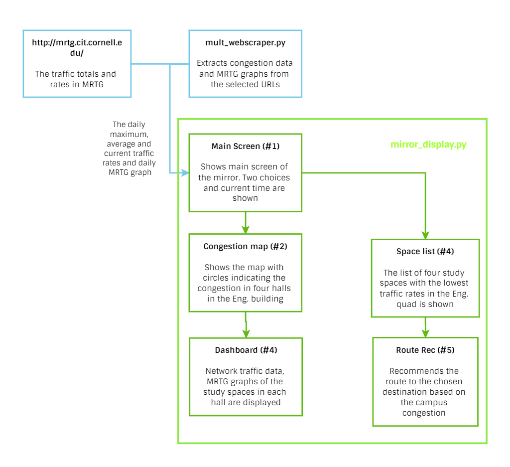
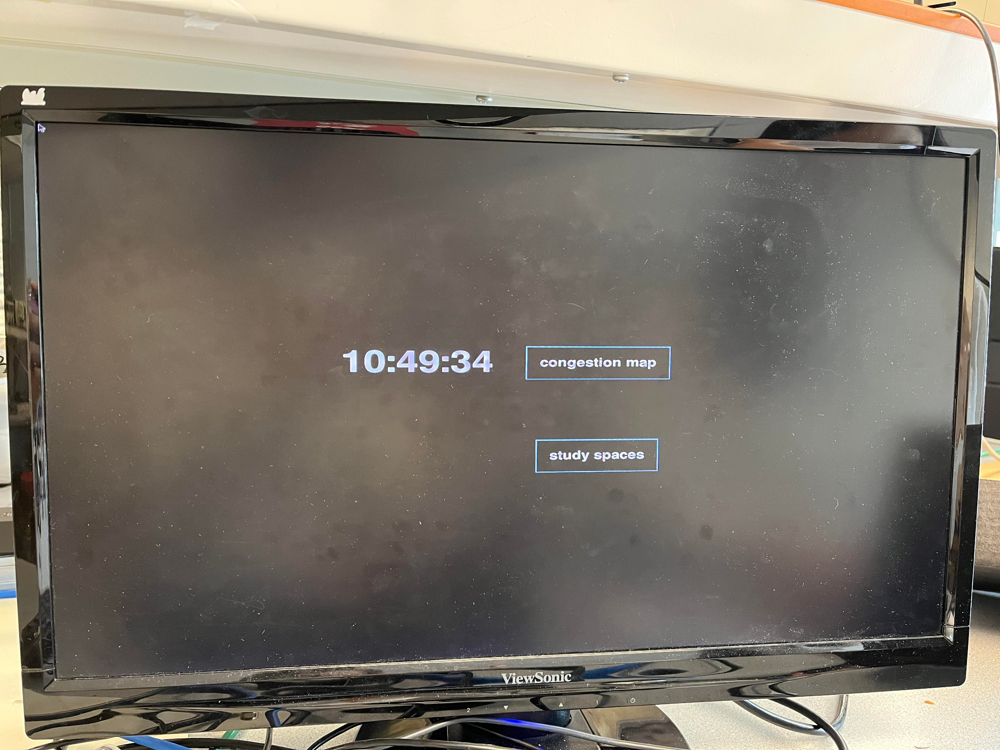
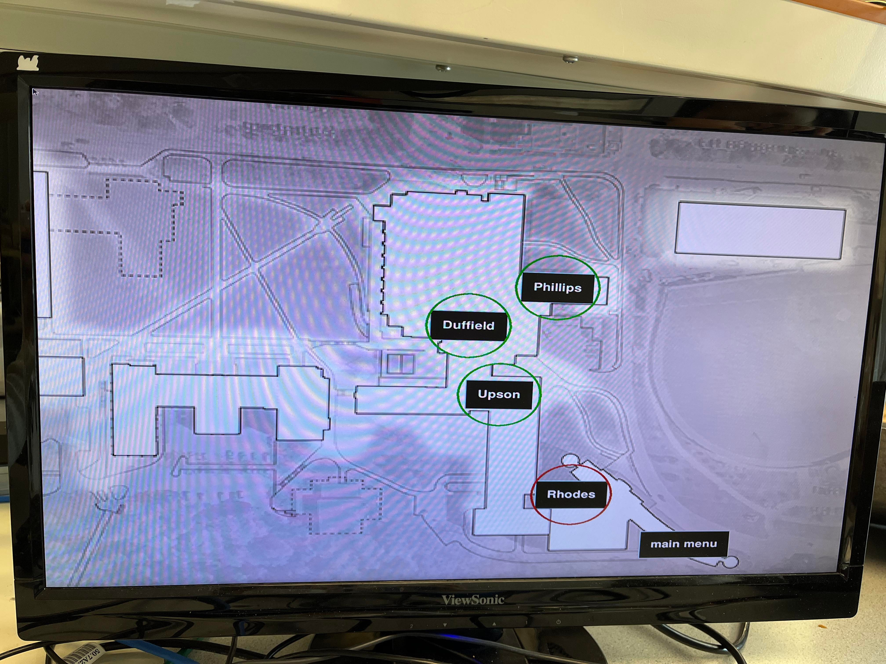
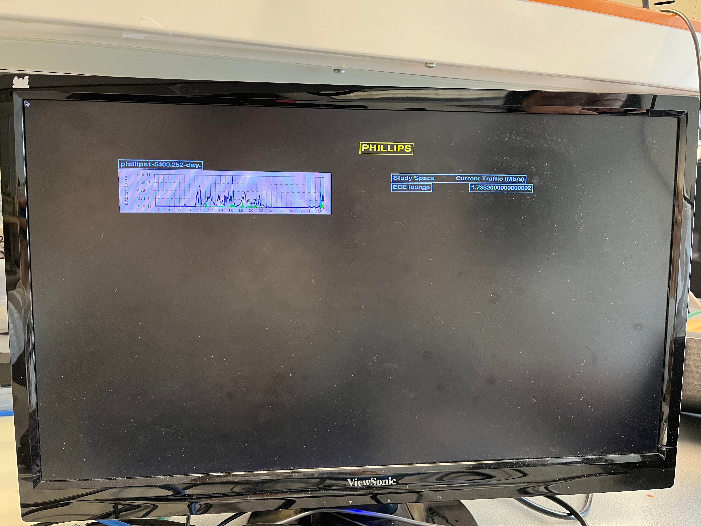
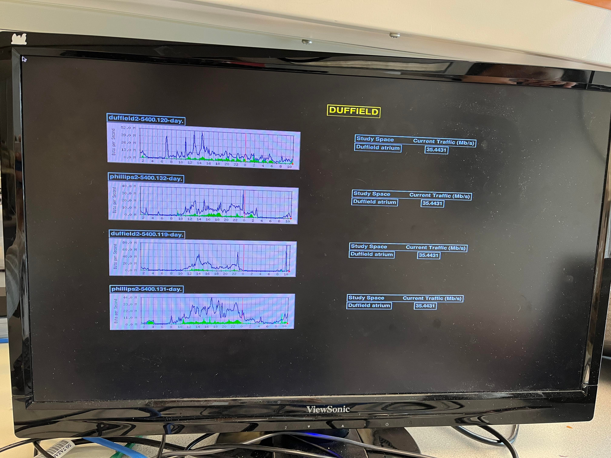
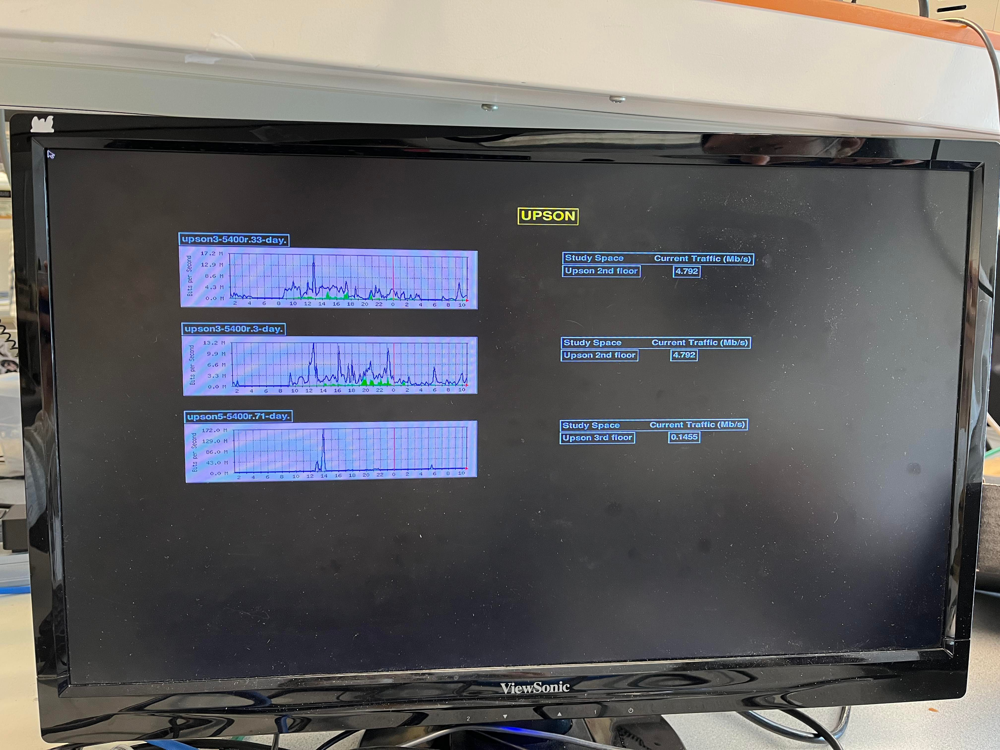
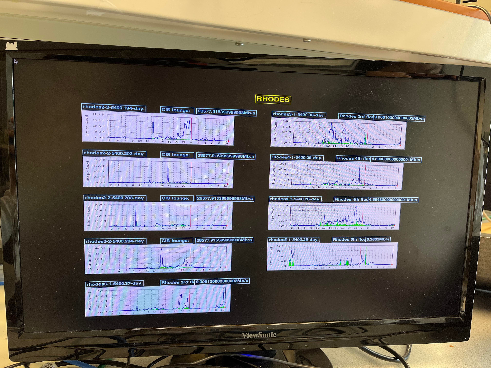
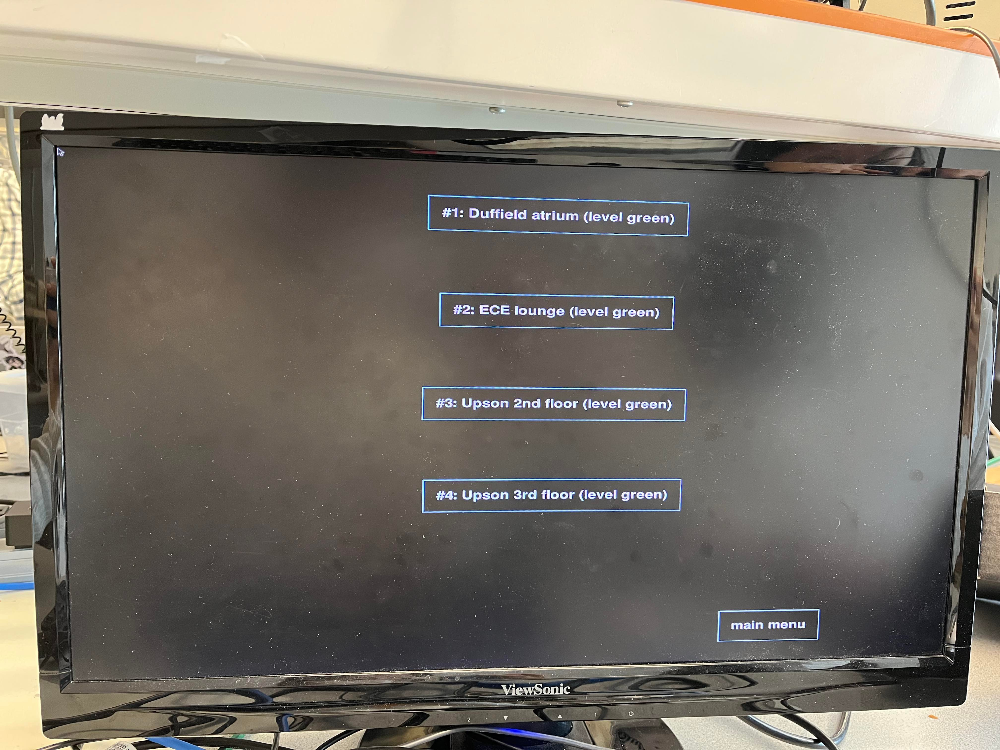
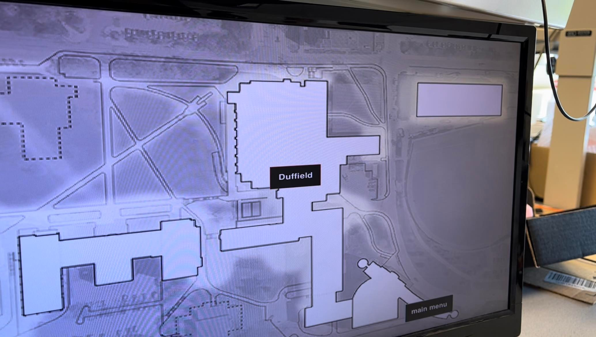
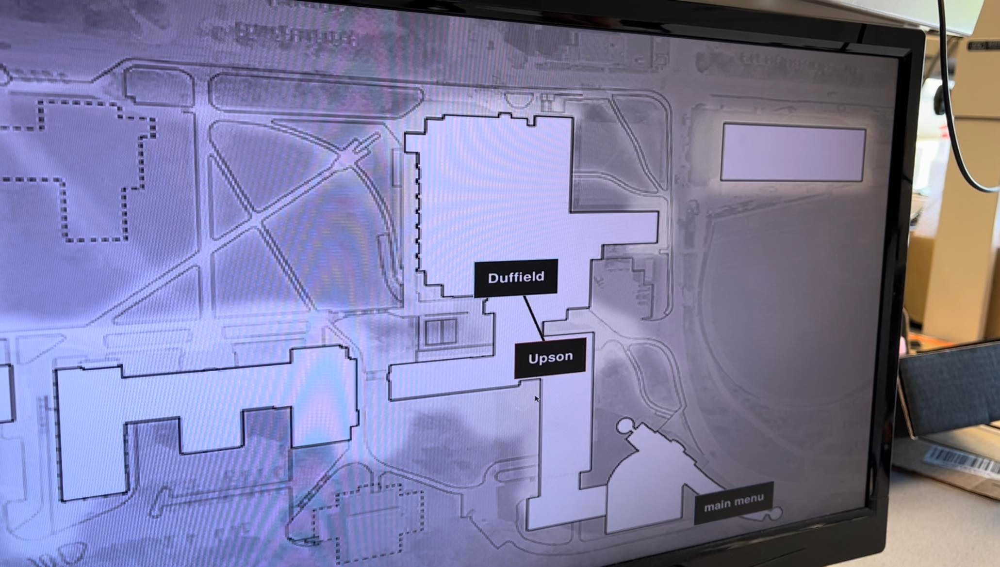

Campus Congestion & Guide
Spring 2022 ECE5725 Project
A Project By Minjung Kwon (mk2592) and Esther In (ei53)
Demonstration Video
Introduction
In the modern day and age, the average university student is accompanied by their phone, which is often connected to campus Internet. Of course, they may also be carrying their laptop, their tablet, and other electronic equipment. When these devices are connected to the Internet through Wireless Access Points, the resulting traffic data, when drilled down to the physical location level, can serve as a measurement of the level of campus congestion across campus.
This project utilizes the public Multi Router Traffic Grapher (MRTG) website full of information as provided by Cornell's IT department. By leveraging the network traffic data of the Local Area Network (LAN)'s switch ports, we are able to look under the hood at the network that services the wireless access on Cornell's campus. Utilizing this, our project is able to take the incoming and outgoing traffic data from multiple Access Points (AP), consolidate for total traffic categorized a given room (such as the Duffield Atrium or CIS Lounge), and create a graphical representation merged with a map of the Engineering Quad of campus for red, yellow, and green levels of campus congestion. The project also creates a list of recommended study spaces in the Engineering buildings ranked in least to greatest amount of campus congestion, and can recommend "routes" through campus that take into account the congestion levels of the intervening areas.

Example MRTG Graph Data
Project Objective
- Access the data from the different APs that are present in a room
- Create a graphical representation over a map of the level of campus congestion in common areas
- Offer a ranked list of study spaces, prioritizing the ones with the least amount of campus congestion, and offer routes to get there
- Have the user be able to control the progression through the menus and select options with either mouse clicks on a computer monitor, or by "remote control" buttons
Design
Phase 1: Data Acquisition
This project has multiple moving parts. There is the data collection portion, which necessitates a way to pull the website traffic data from the individual Wireless APs that are scattered through campus, in rooms and in hallways. At first, we wanted to get a representation of this kind of network data by pinging the individual APs and comparing the ping latency against a calibrated threshold for an idea of how saturated with traffic the AP was. However, we soon found that due to the structure of the campus WiFi network, this nature of sleuthing was prohibitively difficult. The campus network is organized into clusters called Nodes, which are intra-building uplinks within each building's network room. Within each node (of which there are nine, ranging in geographical location from Clara Dickson to Goldwin Smith to Faris), individual buildings such as Phillips or Rhodes are serviced.
In the end, we utilized the MRTG website and information as provided to us by Cornell IT. In this way we were able to find the actual incoming and outgoing data traffic (in kb/s or Mb/s) in real from individual access points. Thus we were able to find the actual network traffic data to correlate to the level of campus congestion in different areas of campus, which we imported into a Pandas DataFrame using a webscraper and collated by physical location (determined by fieldwork, as the APs are sometimes named opaquely, such as RHODES-30042-3-AP: an AP in a hallway on the third floor of Rhodes).

Rhodes Hallway Access Point
Phase 2: Data Processing
The next part of the project was smooth, as we were able to create a multiple-menu script in Python using pygame. The script imports the data from the webscraper and makes a determination of the level of campus congestion, and draws circles on a map of the Rhodes-Phillips-Duffield-Upson section of the Engineering Quad as a visual representation of the congestion data. We were able to determine threshold levels by fieldwork and observation correlating the number of people in individual areas and the amount of Internet traffic through the APs. Utilizing this data, we were also able to successfully create a ranked list of recommended study spaces on campus and recommended a "route" to get there based on the congestion level in the intervening areas, which we programmed using a route flowchart.
Phase 3: User Interface Decisions
We wanted to use a smart mirror. However, in the testing process we found out that this would have not been practical within the constraints, nor necessary for what we wanted to do, so we dropped it. There is more information in the Testing section about this design decision.
We briefly considered somehow uploading our map and associated work to a webserver so that any student on the RedRover WiFi would be able to access the data and congestion map. We researched various ways to do this, including setting up an Apache webserver on the Raspberry Pi to host a website. However, we ran into difficulties doing this, and in the interest of time eventually decided to not utilize webservers. More information about the testing that occurred before making this design decision can be found in the Testing section.
The current project design utilizes a piTFT and monitor-based user interface. The mouse allows the user to physically click buttons on the monitor to select options on a menu, as well as offering buttons on the piTFT to do the same. The following buttons allow for this functionality:
- Button 27 (on piTFT): dynamic, choice that is closest to top of screen
- Button 23 (on piTFT): dynamic, choice that is below that of Button 27
- Button 22 (on piTFT): dynamic, choice that is below that of Button 23
- Button 17 (on piTFT): dynamic, choice that is below that of Button 22
- Button 26 (on breadboard): static, Main Menu
- Button 13 (on breadboard): static, Quit/Exit to Terminal

Buttons on piTFT
As such, for an example, in the Congestion Map menu the first button (27) would correspond to Phillips, the second (23) to Duffield, the third (22) to Upson, and the last (17) to Rhodes.
Clicking the "buttons" on the monitor with the mouse will also allow the user to select options. Buttons are denoted by white font text and light blue outlines. There are buttons on the main menu, Congestion Map, Study Space list, and Route Recommendation.
Phase 4: Route Recommendation Logic
Recommending a route to a study space, given a study space that a user has selected, was one of the things that we knew we wanted to do at the beginning of the project. Our plan was to have a finite state machine, or flow chart, of logic that would be reasonable given the information about campus congestion available. As noted earlier in this report, we correlated the network traffic data at the AP level with the amount of campus congestion, by physically going into the study space or room and noting the amount of congestion, as well as the quantified traffic data.
We defined the three levels of campus congestion as follows:
- Green: easy to find a table or place to sit
- Yellow: need to search for a table, but there are still a few immediately available
- Red: there are no tables or spots available in the space
More information about how we implemented this can be found in the Drawings section, under Route Calculation Logic.
Drawings
Software Flowchart. The green box indicates the mirror_display.py, and the blue arrow shows the flow of the traffic data from the website.
mult_webscraper.py
mult_webscraper.py gets daily incoming and outgoing data traffic, port name, hall name and graph image from the mrtg.cit.cornell.edu. It returns the information in a Pandas data frame and filters to get a certain information. There are multiple helper functions that convert data type into dictionary type, list of graphs, list of hall names and images downloaded in img directory. Whenever the main function runs, the whole set of congestion data is updated from the Cornell CIT website.
mirror_display.py
mirror_display.py uses data from mult_webscraper.py and displays the map, charts and graphs to the monitor controlled by piTFT. It sets up Pygame to visualize and interact on the monitor with a mouse click and GPIO to get inputs from the piTFT and external buttons. It contains five different menus or displays. First menu is the main menu that shows real-time clock and two options to choose: showing a congestion map or study space list. If the Congestion Map button is clicked (or selected via button), the display moves to the second menu that shows the map of the halls in the Engineering building with green, yellow or blue colored circles that each indicate the level of congestion in the specific hall. If one of the buttons in those circles are selected, the display moves to show the dashboard menu that contains the MRTG graph, study space name, and network traffic rate of each access point in the study space. Thus, the user can get more specific information by examining the dashboard.
If the study space option is clicked in the main menu, the top four of the study spaces with the lowest traffic rates are shown with the color level of congestion. If the study space is clicked on or selected in the list, the display changes to the route recommendation for the user to get to the chosen study space through the lowest possible congestion in the building. The specific algorithm is shown in the next section.
Route Calculation Logic
Before planning out the logic flow, we first considered the entrance locations of the halls. Assuming the user is coming from the dorm or the central campus, if the study space destination is Duffield or Phillips, then we know the user can go straight to the hall through its entrance. (We did not consider Rhodes as "next to an entrance" as part of this assumption.)
If not, we then started considering the congestion in the building. For example, if all the buildings have high congestion levels meaning the building is full of crowds or has no study space, then it recommends using the entrance of each hall instead of going through the crowds inside of the Engineering buildings. If not all the buildings are crowded and the user wants to go to either Upson or Rhodes where it can be routed through other halls, then we consider the congestion in Duffield, Phillips and Upson and recommend the route to the Upson or Rhodes based on its congestion level.
The below flowchart explains the logic in detail as well.

Route Calculation Logic Flowchart
Testing
Testing Smart Mirror Feasibility
For the Smart Mirror hardware model, we received the model that was designed for the Magic Selfie Mirror project in Fall 2017. The model has 22 IR sensors with four 8-3 encoders to build two 16-4 encoders that output the coordinate on the mirror. Before testing the mirror, we realized that some wires were disconnected from the soldering and started to fall out of the connection because the stripped wires were flexible but too thin and had an unstable connection to the board. After investigating the board and wiring, we soldered the disconnected wires (Power, GND and Sensor Output) to the board and used a Raspberry Pi and breadboard to see if the sensors were working. To test the basic functionality, the GPIO pins were used while avoiding the special function pins like I2C, SPI and UART pins. When we tested the sensors, we found out that some of the sensors were not working or were not sensitive enough to detect the motion. The output coordinate did not change as we moved our hand's position on the mirror. Also, the coordinate in the same position was outputted differently over time. Moreover, the short-length connections of wires and boards blocked the monitor and the strong reflection of the mirror made it hard to see the result on the monitor through the mirror.
We concluded that the mirror was not a good visualization method and tried to seek the other methods to visualize and control our system. Due to the non-robustness of the connection and sensitivity of the sensor and unclear visualization, we decided to utilize piTFT as a remote control to our system.
Testing Webserver Feasibility
When it became clear that utilizing the smart mirror would be unrealistic given the constraints at the time, we switched gears to examine other avenues of user interface. One of the things we considered was somehow hosting the PyGame window on a webserver, accessible to anyone on the RedRover network by typing in the IP address of the hosting Raspberry Pi in a web browser. However, complications arose. Although we were able to successfully download, install, and host a small website on the Pi with Apache, we discovered that it is not possible to upload a PyGame script onto a webserver. We explored options to convert the PyGame script to JavaScript, or even modules such as pyjsdl that would allow us to compile PyGame/Python scripts to JavaScript. However, although we downloaded, installed, and tried various debugging methods, we could not get the compilers to work on the Pi - even on other, simpler PyGame example scripts. Thus, we discarded the possibility of using a webserver to host the congestion map and menu as infeasible without extensive effort.
Results
When the mirror_display.py program starts to run, the main menu is displayed with a current time in the form of hour, minute and second which is updated by each second. It also shows two option choices, congestion map and study spaces, that lead to the next display.
Main menu with real-time clock and two options.
If the congestion map text box is clicked or the first button in the piTFT is pushed, the campus map with colored circles showing the congestion level is successfully shown on the monitor. The color of the circles are updated every five minutes by loading the congestion data from the CIT website. The user can choose the main menu by clicking or pushing the fifth button on piTFT to go back to the main menu.
Congestion map
Clicking the textbox of the hall on map or pushing one of four buttons on piTFT will lead the user to the network traffic dashboard of the chosen hall. The order of the buttons are the same as the order of the hall from the top of the map: Phillips (#1), Duffield (#2), Upson (#3) and Rhodes (#4). The dashboard contains each access point's daily MRTG graph with its image name, the name of the study spacem and current total traffic rate (Mb/s) of the study space. Each hall has a different number of study spaces with the number of access points. For example, Phillips hall has only one access point in the ECE lounge, but Rhodes hall has study spaces in multiple floors. Also, the CIS lounge in Rhodes has a several access points. The dashboards of all four halls are shown below:
   Dashboards of all four halls in the Engineering building
On the right bottom of the graph, the red dot indicates the current network traffic of each access point. It is observed that the numerical traffic rate of the CIS lounge is much higher than the reading on the graph. It is intentionally coded to get a high traffic rate in CIS lounge to show the diverse colors of the cirlces in the congestion map because the demo was done in the morning when the congestion level is low in all the halls.
The following figure is the display of the study space list when the second option is chosen in the main menu. The list successfully shows the list of four study spaces with the lowest congestion in the building. It also shows the color level in the text box. In the figure, the current levels of congestion are the same in four buildings. In this case, the list is sorted in alphabetical order as shown.
Study space list
The following figures are the display of the recommended route with the black line connected based on the route calculation logic. This is shown when the study space is chosen to be the destination on the study space list. The red text box indicates the destination, and the blue text box indicates the hall to go through. Each following figure shows the route to the Duffield and Upson hall. Based on the fact that there are almost no people in the building in the morning (when the result was recorded), the route recommendation works successfully by recommending to use the entrance for Duffield and use the Duffield atrium to get to Upson hall.
 Route Recommendation
The system successfully goes to the main menu and quits when the fifth and sixth button on the piTFT is clicked correspondingly. The update of the congestion data by five minutes was checked with the quit time of 20 minutes. The third button on the piTFT was sticky and did not always register, requiring the user to push it hard a few times. This was a known issue throughout the semester of this particular piTFT. Other than that, there were no big difficulties.
Work Distribution
Project Group Picture

Minjung Kwon
mk2592@cornell.edu
Circuit Design
Circuit Test
Program implementation

Esther In
ei53@cornell.edu
Program design
Program implementation
System optimization
Parts List
- Raspberry Pi $35.00
- LEDs, Resistors and Wires - Provided in lab
Total: $35.00
Code Appendix
All code has been uploaded to a GitHub repository.